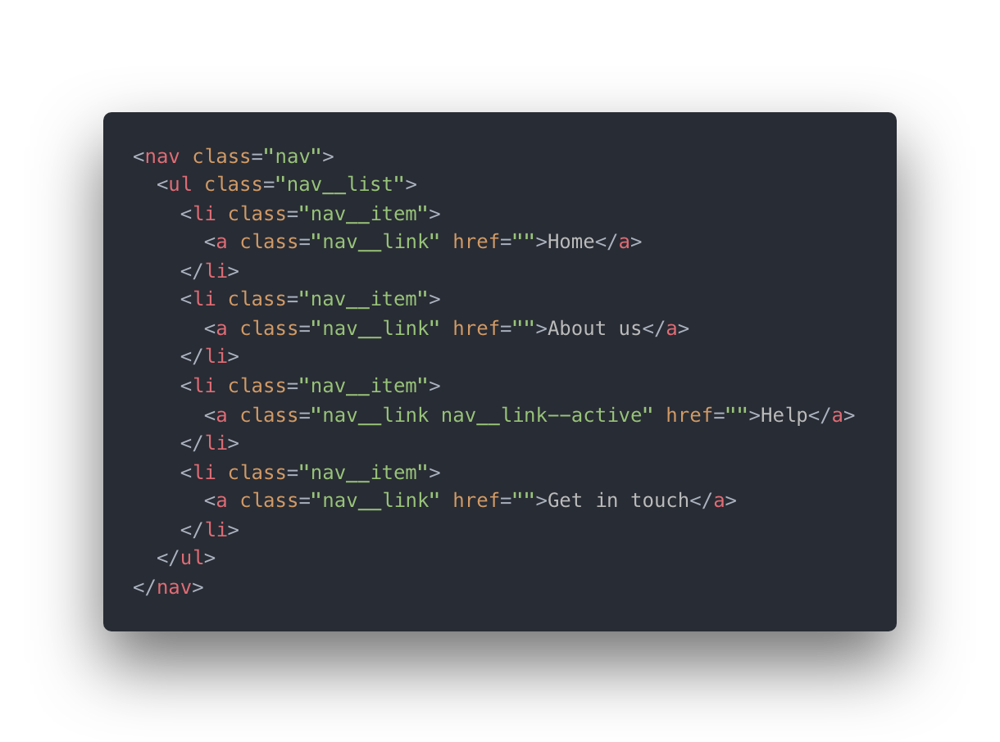

Back to Blog
BEM and SASS: A Perfect Match


Fish and chips, Posh and Becks, Netflix and chill. These are all things that go well together; or so I’m told. It’s time to add BEM and SASS to the list.
If BEM is the cake, then SASS is the icing.
Taking the above navigation bar. Traditionally in 1999 (if HTML5 elements were a thing then), we may have created the following markup whilst listening to Nickelback on Napster. Everything works great, we get the navigation bar we want.

What are they?
- BEM (Block. Element. Modifier) is a naming methodology, which aims to solve many of the problems you’ll commonly encounter when naming classes and structuring your CSS. It also does a great job of enabling you to create reusable front end components, which is something we all strive for: to be healthy, wealthy and create reusable components.
- SASS on the other hand, stands for Syntactically Awesome Style Sheets. Way to blow your own trumpet. Although, “awesome” is potentially an understated adjective for this thing. Their tagline, “CSS with superpowers” pretty much covers it. It allows you to nest selectors, create loops, functions and all the fun stuff that you wish you could do with CSS.
However, there are a few problems with the above approach:
- To target those li you’ll need to be doing something like .nav li. What happens if we want to change the list to instead be a group of divs? The CSS needs updating as well as the HTML.
- .active may well be declared somewhere else in the CSS. Which may start conflicting with the styles. Especially if the conflicting selector comes in after you’ve created the navigation bar; you may not even spot the conflict until it’s too late.
- This can’t be modular. It can’t be dropped anywhere in your code. What’s to say with this approach we don’t have .header li with some conflicting styles. It’s a never ending battle with specificity — easy for you to say.